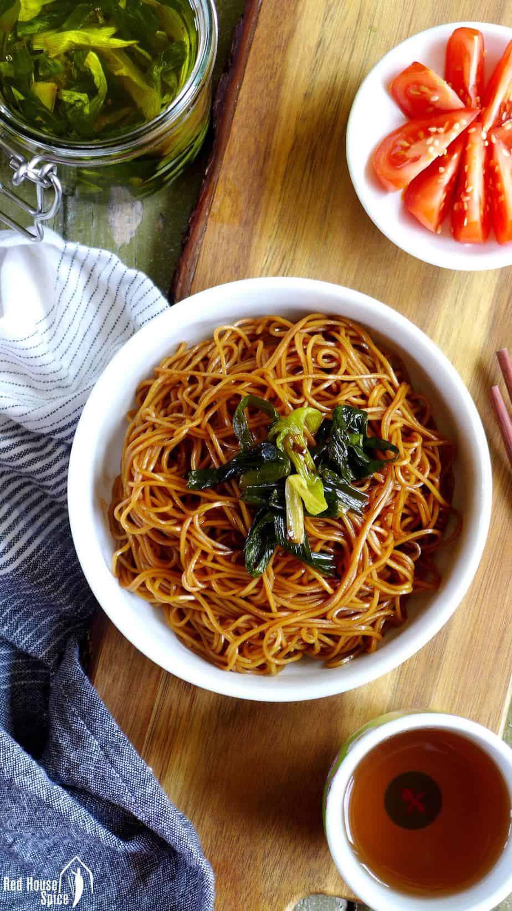

Shanghai Spring Onion Oil Noodles
Ingredients
- 4 tablespoon cooking oil
- 5 stalk spring onion
- 2 tablespoon light soy sauce
- 2 tablespoon dark soy sauce
- 2 teaspoon sugar
- 400g dried thin round noodles
Instructions
-
Pour oil in a wok. Add spring onion. Leave to simmer over a medium low
heat until it starts to brown. Take the onion out and set aside.
-
Add soy sauce and sugar to the oil. Cook until the sauce starts to
bubble. Turn off the heat.
-
Meanwhile, bring a large pot of water to a boil. Cook noodles
following the instructions on the package. Drain then briefly rinse
under running water.
-
Place noodles in the wok. Stir well to evenly coat the noodles with
the sauce.
-
Portion out the noodles into 4 serving bowls. Top with fried spring
onion.
Food Image
